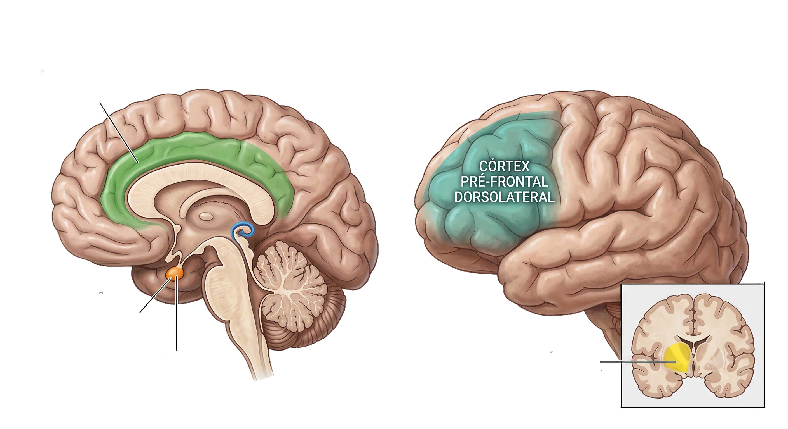
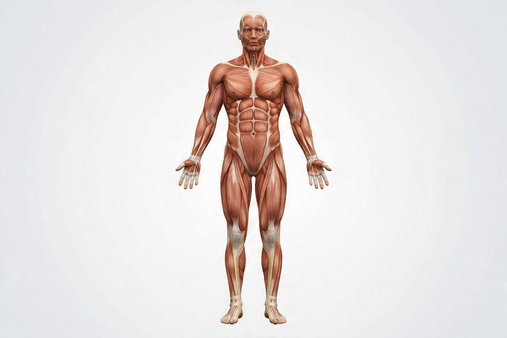

O Efeito Placebo no Corpo Humano

Cérebro Interativo

Sistema Cardiovascular

Efeito
Redução da pressão arterial sistólica e da frequência cardíaca.
Redução da pressão arterial sistólica e da frequência cardíaca.
Mecanismo
A reconfiguração cognitiva (mind-set) atenua o tônus simpático, promovendo o rearranjo de barorreceptores e a homeostase autonômica.
A reconfiguração cognitiva (mind-set) atenua o tônus simpático, promovendo o rearranjo de barorreceptores e a homeostase autonômica.
Sistema Muscular

Modulação da Nocicepção
Redução da dor em afecções agudas ou crônicas via sistemas opioide endógeno e endocanabinoide.
Redução da dor em afecções agudas ou crônicas via sistemas opioide endógeno e endocanabinoide.
Bloqueio Sináptico
β-endorfinas ligam-se a receptores opioides μ pré e pós-sinápticos no corno dorsal da medula.
β-endorfinas ligam-se a receptores opioides μ pré e pós-sinápticos no corno dorsal da medula.
Cascata Celular (Proteína Gᵢ)
Inibição de canais de Ca²⁺ pré-sinápticos: bloqueia a exocitose de neurotransmissores pró-nociceptivos.
Inibição de canais de Ca²⁺ pré-sinápticos: bloqueia a exocitose de neurotransmissores pró-nociceptivos.
Hiperpolarização pós-sináptica
Abre canais de K⁺, gerando efluxo iônico e impedindo o potencial de ação.
Abre canais de K⁺, gerando efluxo iônico e impedindo o potencial de ação.
Resultado
Barramento cinético do estímulo doloroso na periferia do sistema nervoso central.
Barramento cinético do estímulo doloroso na periferia do sistema nervoso central.